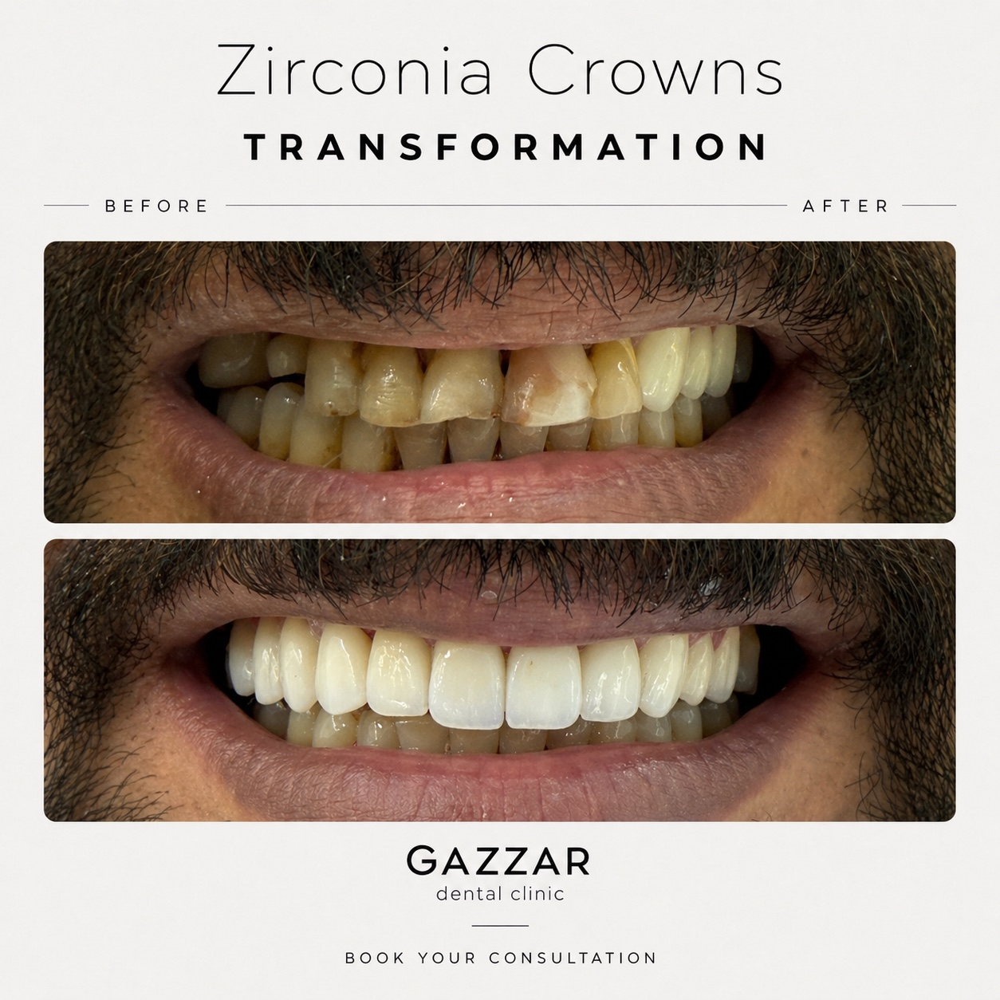

تُعد خدمة تركيبات الزركون من الخدمات الأساسية في عيادات تجميل الأسنان الحديثة، وتهدف إلى تحسين صحة الأسنان ومظهر الابتسامة بشكل طبيعي ومتوازن. في GAZZAR Dental Clinic يتم تقييم الحالة أولًا ثم اختيار الخطة الأنسب حسب احتياج المريض.
متى تحتاج هذه الخدمة؟
قد تحتاج إلى تركيبات الزركون إذا كنت تعاني من مشكلة في شكل الأسنان، اللون، الفراغات، التآكل، الكسور، أو تبحث عن حل تجميلي ورقمي يحافظ على المظهر الطبيعي للابتسامة.
مميزات العلاج في GAZZAR Dental Clinic
- تشخيص دقيق وخطة علاج مخصصة لكل حالة.
- استخدام تقنيات رقمية وتجهيزات حديثة داخل العيادة.
- شرح كامل للتكلفة والمدة قبل بداية العلاج.
- متابعة بعد العلاج للحفاظ على النتيجة.
السعر ومدة العلاج
السعر المعلن هو Starting price يبدأ من 3,500 ج.م وقد يختلف حسب التشخيص وعدد الأسنان أو صعوبة الحالة. يتم تحديد الخطة النهائية بعد الكشف.
الأسئلة الشائعة
هل النتيجة مناسبة لكل الحالات؟
النتيجة تختلف حسب حالة الأسنان واللثة وخطة العلاج المناسبة لكل مريض.
هل يمكن الحجز عبر واتساب؟
نعم، يمكنك الحجز مباشرة عبر واتساب على رقم +20 122 175 3277.
ملاحظة طبية: المعلومات هنا للتوعية ولا تغني عن الكشف والتشخيص داخل العيادة.